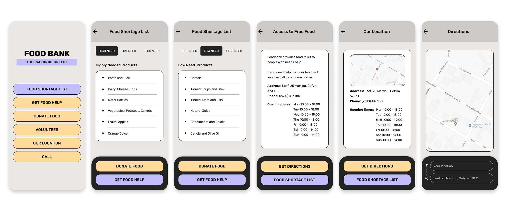
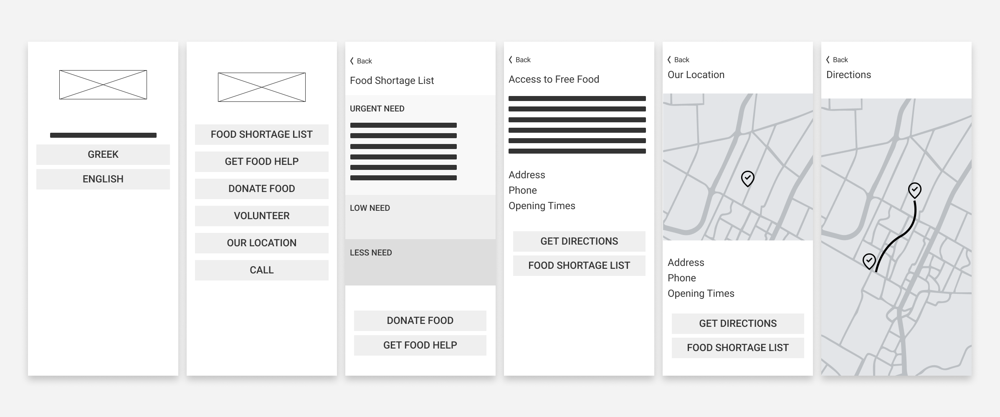

Food Bank App
Visit onlineMy role in the project
UX designer designing an app for Sushi restaurant from research to prototype.
Food Bank is a non-profit organization based in Thessaloniki that acts as food storage. They collect and distribute food to people who struggle with hunger. The organization needs a tool to keep supporters up-to-date about the food items lacking and inform food-insecure people about food items that are available for them to get.
The problem
Many people in Greece face hunger each day, the Food Bank organization has identified the need for food relief for people and families with low-income.
Project goal
Design an app to help the local food bank collect food with the help of supporters and donors and distribute it to food-insecure people.
Target audience
people 30 to 65 who are concern about the impact have the food waste to environment and people lives.
Key challenges or constraints
Donors and supporters want an easy way to check the list of food items the local food bank needs.
Donees need to know what kind of food products they can find at food bank e.g. baby food.
Donees need to know about the availability of food products and how they can get it.
Takeaways
Users shared that by using the app is easier for them to track the food needs of their local food bank, and also that the app make the food donation their priority.
User research summary
After usability study a primary user group identified through research was people 30 to 65 who are concern about the impact have the food waste to environment and people lives. All of them want an easy way to follow the local food bank storage needs and donate unused food.
Takeaways
While I was designing the Food bank app, I learned the importance of the research study in every step of the product design.
Research study details
- 
- 